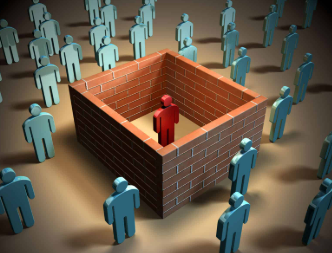
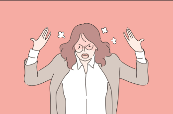

Effects of Cyberbullying
Cyberbullying causes serious harm. Here are some of the common effects it has on individuals:
- Emotional Effect: Victims may feel sadness, hopelessness, fear, or embarrassment. These emotions can affect their confidence and self-worth.

- Social Effect: Many people who are cyberbullied avoid social activities or isolate themselves from others to escape judgment or further bullying.
- Physical Effect: Victims may suffer from physical symptoms like headaches, stomachaches, fatigue, or trouble sleeping due to stress and anxiety.
- Psychological Effect: Prolonged cyberbullying can lead to serious mental health issues such as anxiety disorders, depression, or suicidal thoughts.

- Behavioral Effect: Changes in behavior may include aggression, avoiding technology, becoming withdrawn, or acting out due to emotional distress.

- Academic Effect: Victims may lose interest in school, skip classes, or perform poorly due to the stress and emotional pain caused by bullying.
You Matter
"Every person deserves to feel safe and respected — both offline and online."
Let’s support one another and stop cyberbullying together.
.png)